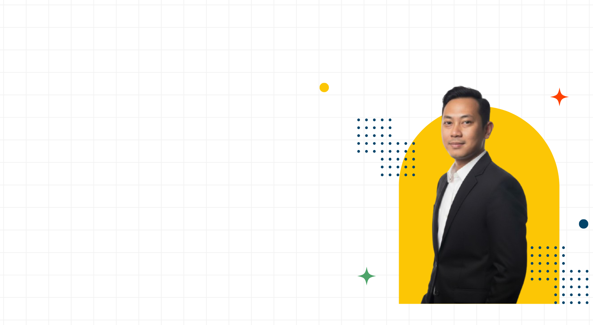
Bambang Hermawan
I'm IT Aplication Support
About
Dedicated IT professional with a strong foundation in IT Application Support, ensuring the stability, troubleshooting, and performance of critical business systems. Currently focused on advancing into DevOps engineering—bridging the gap between application lifecycles and modern infrastructure through cloud technologies, containerization, and automation.
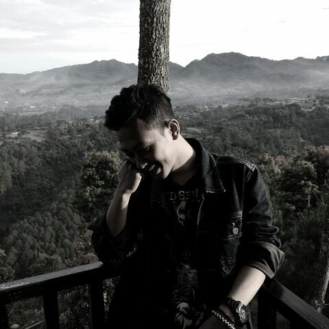
IT Application Support & Transitioning to DevOps
Leveraging 9+ Years of IT Application Support to Build a Solid Foundation in DevOps & Cloud Infrastructure.
- Birthday: 03 April 1994
- Website: bambanghermawan.github.io
- Phone: +6281211271066
- City: Tangerang, Indonesia
- Age: 30
- Degree: S1 - Bachelor's Degree
- Email: bamban9.hermawan@gmail.com
- Freelance: Available
Over nine years of experience in ensuring system reliability and high availability across enterprise environments. I began my journey in IT Support, mastering server troubleshooting, before advancing into IT Application Support to manage complex application lifecycles and backend systems. Currently transitioning into DevOps & Infrastructure, I focus on modernizing operations through cloud infrastructure management, containerization, and automation. Beyond my technical career, I am a creative enthusiast and the creator of "MindTune," a side project where I explore the intersection of music and technology as an AI Music Creator, integrating emerging AI tools into innovative digital workflows.
Skills
Bridging the gap between robust IT operations, system administration, and AI-driven creative technologies.
Resume
Opportunity is missed by most people because it is dressed in overalls and looks like work." – Thomas Edison
Summary
Bambang Hermawan
Dedicated IT Professional with over 9 years of proven experience in IT Support and Application Support, currently advancing into a DevOps role. Possesses a strong foundation in system troubleshooting, with a recent focus on managing cloud infrastructure, Linux environments, and containerization. Passionate about continuous learning and eager to leverage extensive technical expertise to deliver scalable, automated, and reliable solutions in a dynamic corporate environment.
- JL. Raden Saleh No.34 Ciledug Karang Tengah Tangerang, Indonesia
- +6281211271066
- bamban9.hermawan@gmail.com
Education
Business Intelligence
2013 - 2016
Information System | STMIK Raharja
Studied the intersection of business and technology, focusing on the design, implementation, and management of information systems. Gained foundational knowledge in system architecture and data-driven problem solving, which directly translates to managing scalable IT environments.
Apprenticeship Program
Iduhelp operator!
June 2016 - November 2016
STMIK Raharja
Delivered comprehensive technical assistance for both on-site and remote inquiries. Effectively addressed user concerns with high accuracy and maintained proactive communication to build positive relationships with campus stakeholders.
Widuri Editor
January 2016 - June 2016
STMIK Raharja
Managed the campus wiki platform (Widuri) by overseeing the curation and publication of academic articles and final projects. Conducted rigorous editorial reviews to ensure strict adherence to institutional formatting guidelines, and enforced quality control by performing plagiarism scans prior to final publication.
Professional Experience
IT Application Support & Infrastructure
Sept 2021 - Present
PT. Sigma Cipta Caraka (Telkomsigma)
- Application & Technical Support: Served as the Single Point of Contact (SPOC) for technical assistance, diagnosing and resolving complex software, hardware, and network issues to ensure high application availability.
- System Monitoring & Maintenance: Assisted in managing, monitoring, and troubleshooting Linux-based server environments (Ubuntu) to support stable daily IT operations.
- Deployment Support: Supported the development team in application deployment processes, gaining foundational hands-on experience with containerization (Docker) and web server configuration (Nginx).
- Incident Management & Escalation: Streamlined the escalation process to L1/L2 support tiers by providing detailed incident reports and root-cause analysis, consistently meeting Service Level Agreements (SLAs).
- Documentation & Process Improvement: Developed meticulous technical documentation and Knowledge Base articles, actively suggesting procedural enhancements to improve IT service delivery and reduce future resolution times.
- Cross-Functional Collaboration: Maintained excellent communication with non-technical stakeholders, providing strategic feedback on application workflows to optimize overall user experience.
IT Internal Support
Okt 2018 - Sep 2021
PT. Sigma Cipta Caraka (Telkomsigma)
- System & Application Support: Managed end-to-end IT support for hardware, software, and internal enterprise applications, successfully maintaining 99% workstation uptime.
- Network Infrastructure: Configured and troubleshot Local Area Networks (LAN), including physical cabling and network device management to ensure stable user connectivity.
- Security & Patch Management: Enforced data security by implementing access controls, managing endpoint antivirus software, and performing regular OS and software updates.
- Backup & Business Continuity: Executed routine data backup and recovery procedures to safeguard sensitive company information and minimize operational downtime.
- IT Asset Maintenance: Diagnosed and repaired faulty computer components and configured office peripherals, effectively reducing replacement costs and maintaining operational readiness.
Research And Development Assistant
Sep 2017 - Sep 2018
PT. Putra Naga Indotama
- R&D Project Management: Led end-to-end research and development initiatives, managing project lifecycles from planning to execution to drive product innovation and process optimization.
- Market Research & Problem Solving: Analyzed market trends and addressed consumer feedback to develop technical, consumer-centric solutions aligned with shifting market demands.
- Technology & Process Optimization: Implemented cutting-edge technologies to enhance operational efficiency, ensuring all outputs strictly complied with corporate quality and industry standards.
- Vendor & Stakeholder Management: Cultivated strategic partnerships with external vendors and service providers to secure high-quality resources and streamline development workflows.
Portfolio
A curated collection of projects and works reflecting my dedication to technology and creative arts. This portfolio represents my journey in turning concepts into reality, bridging the gap between technical execution and digital expression.
- All
- App
- Data & Docs
- Creative Works
- Certifications
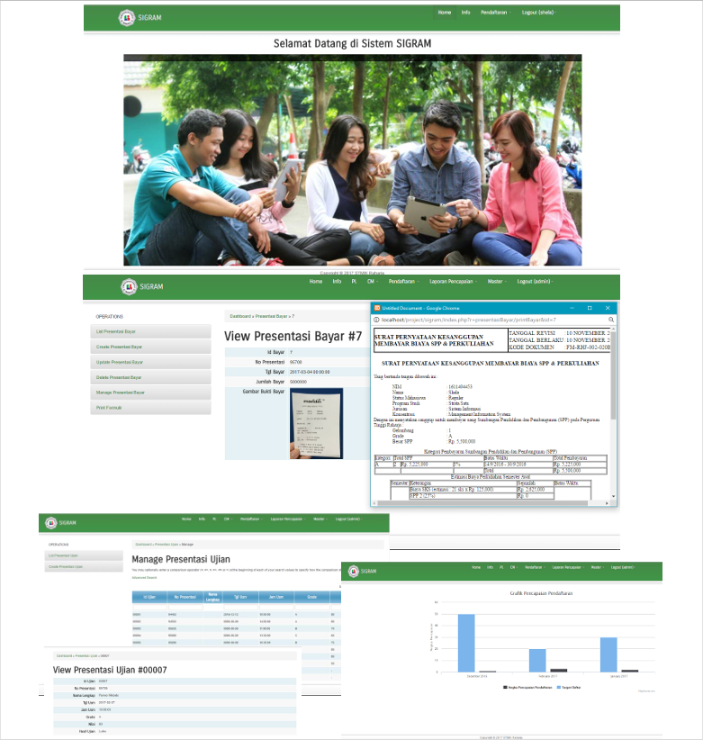
{kind=link}
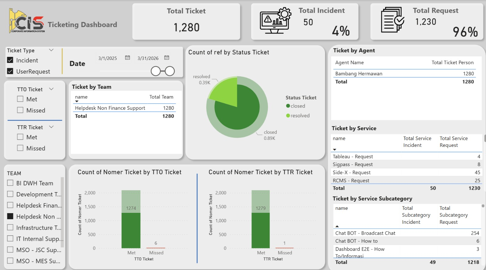
{kind=link}
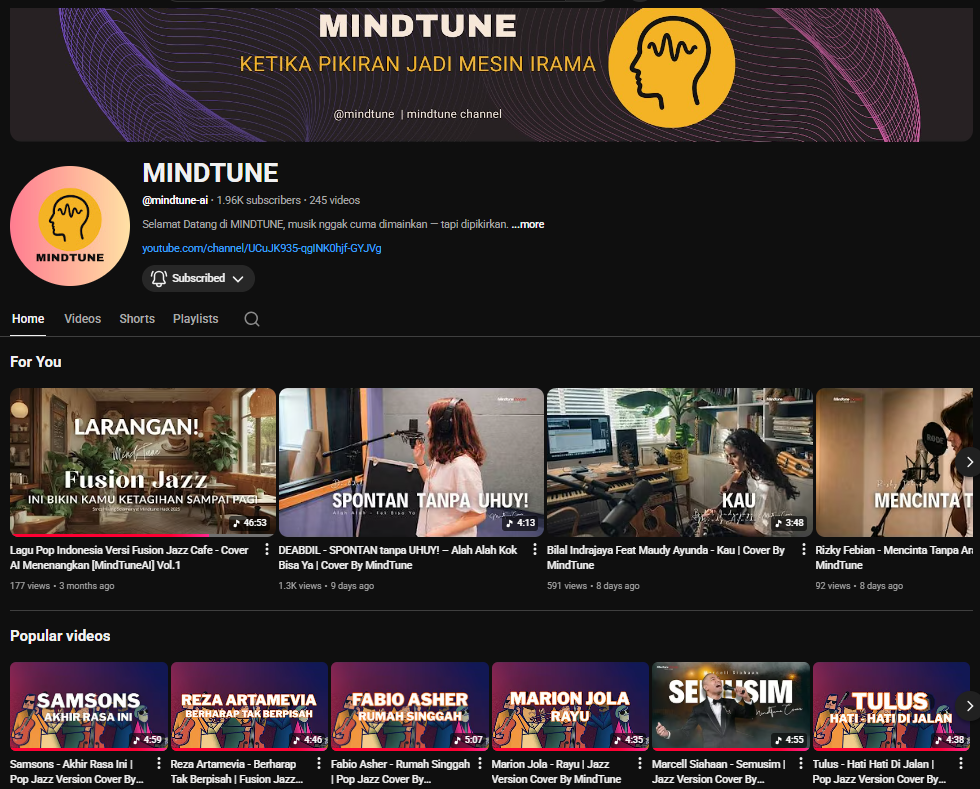
{kind=link}

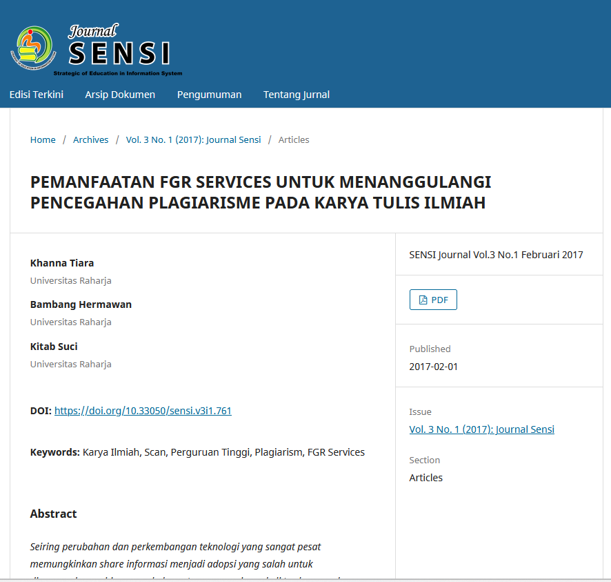
Research Paper
Scientific Journal Co-Author - SENSI Journal (February 2017) Co-authored a research paper titled "Utilization of FGR Services to Mitigate Plagiarism in Scientific Papers". Published by Universitas Raharja, the study focuses on leveraging technological solutions to scan academic papers and prevent plagiarism within higher education institutions.
{kind=link}
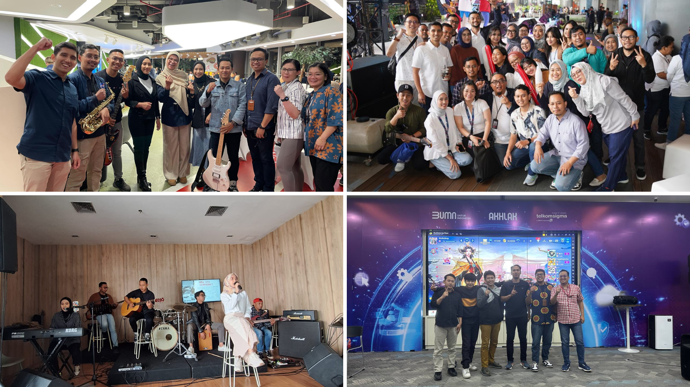
{kind=link}

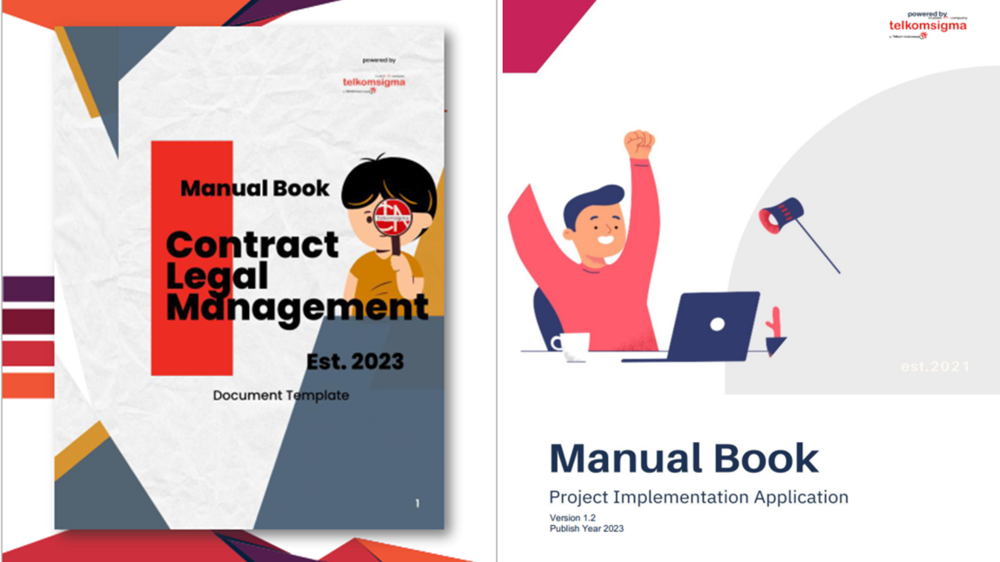
{kind=link}
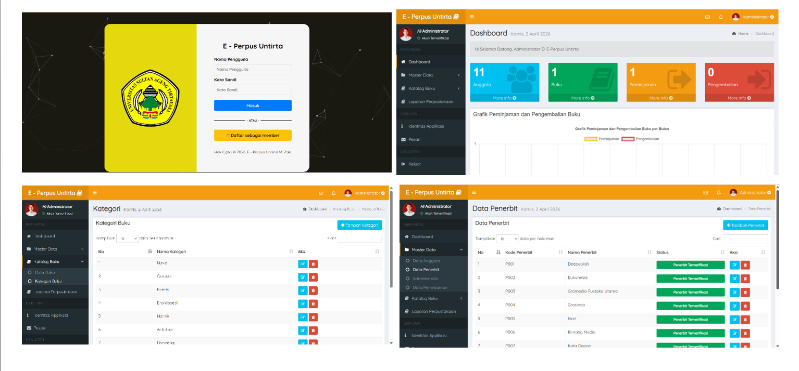
{kind=link}
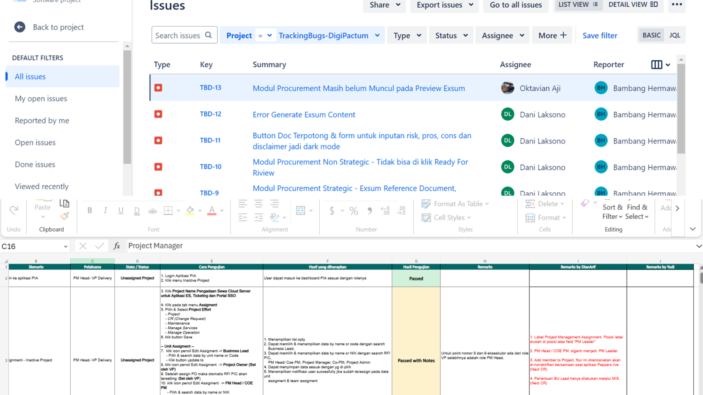
{kind=link}
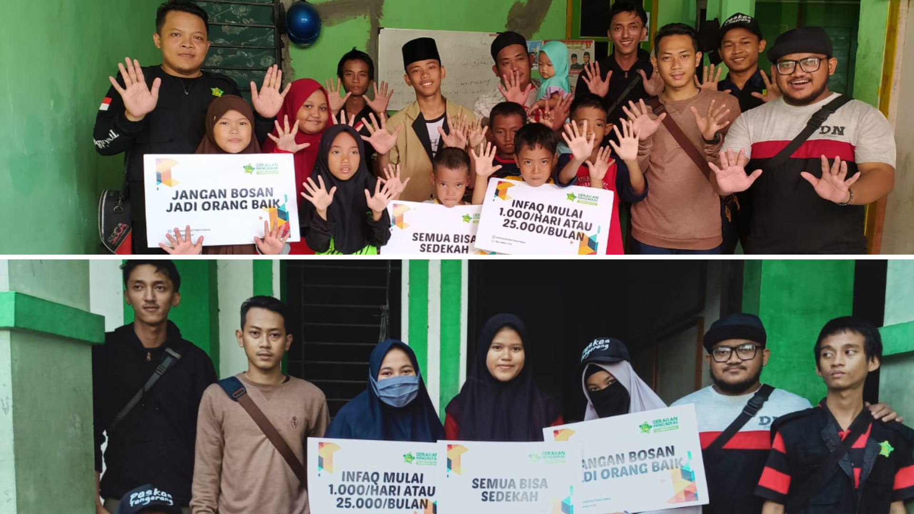
{kind=link}
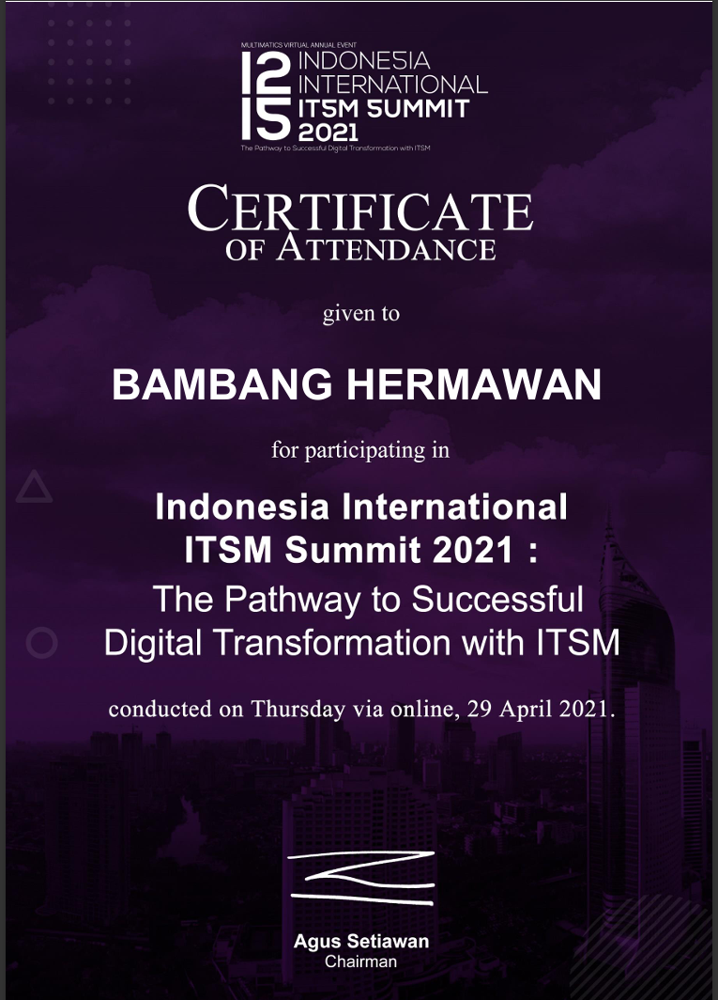
{kind=link}
{kind=link}
{kind=link}
Contact
I am always open to discussing new projects, creative ideas, or opportunities to be part of your visions.
Let’s connect and build something great together.
Address
JL. Raden Saleh No.34 Ciledug Karang Tengah Tangerang, Indonesia
Call Us
+6281211271066
Email Us
bamban9.hermawan@gmail.com